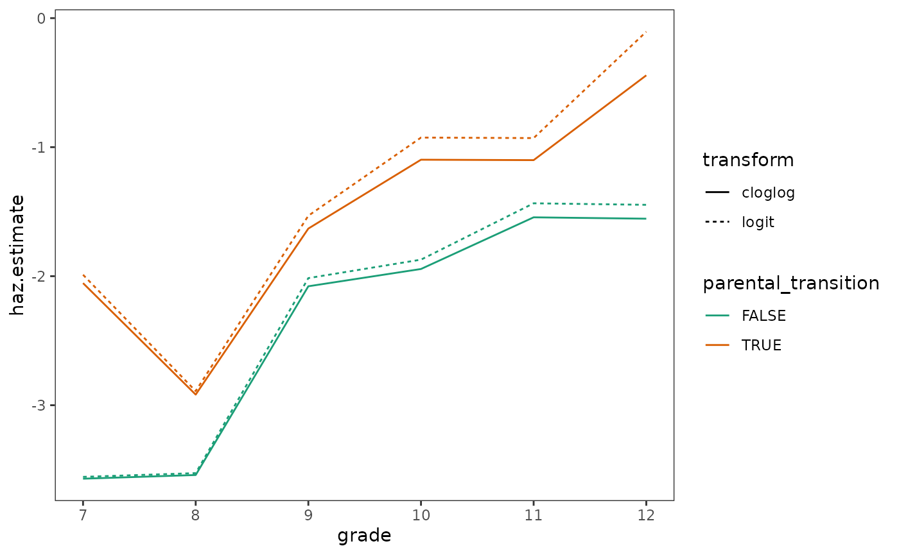
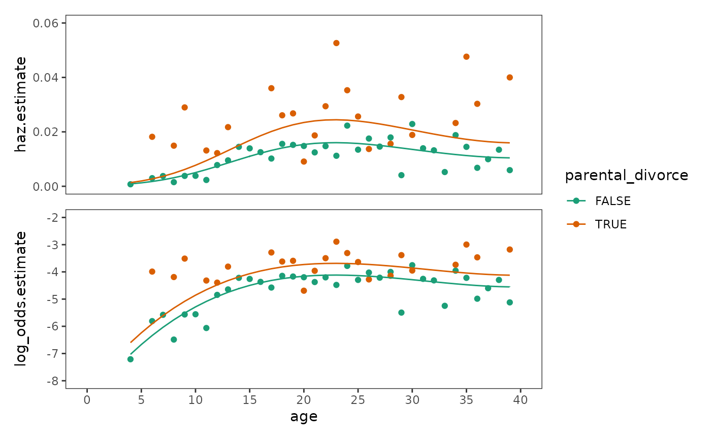
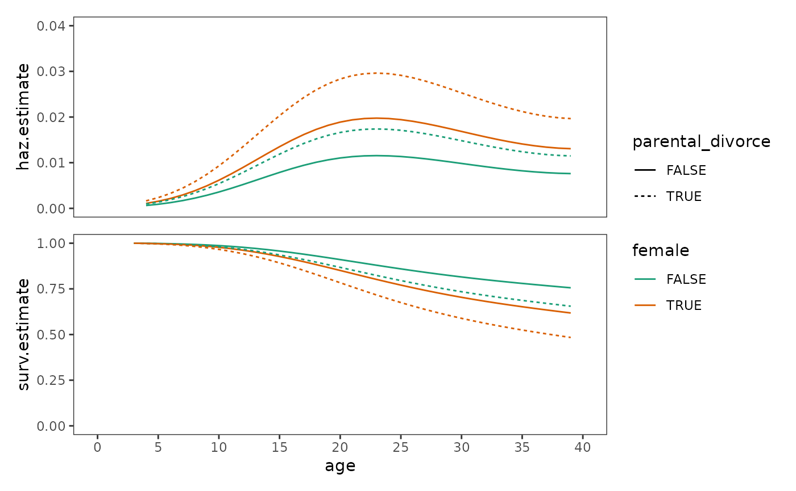
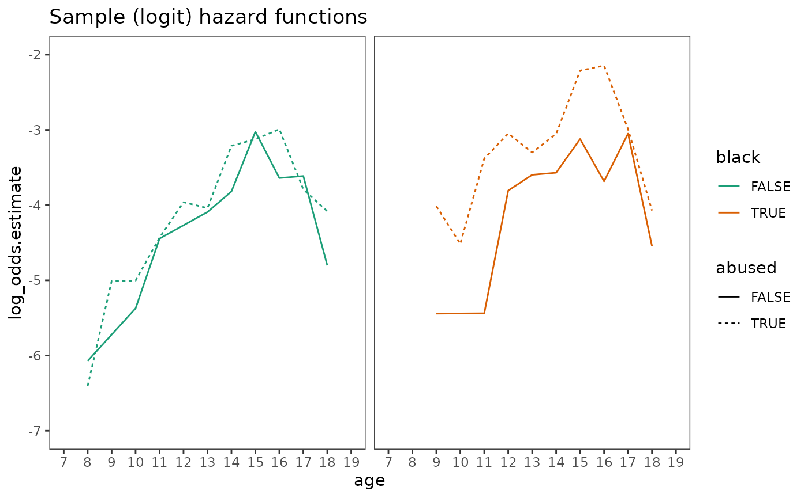
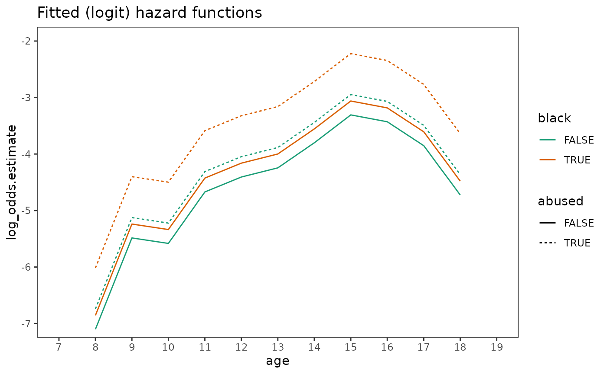
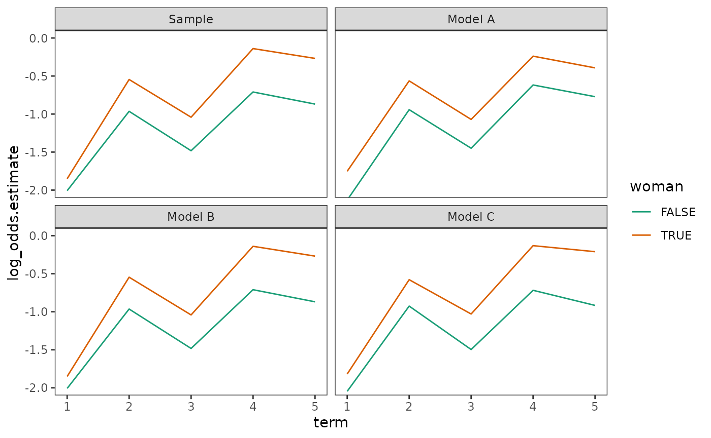
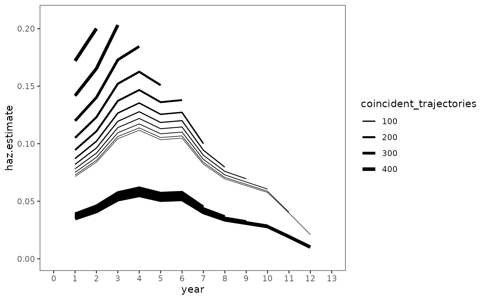
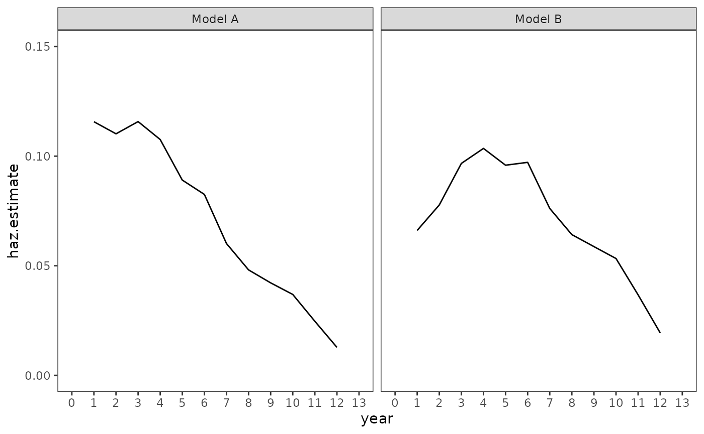
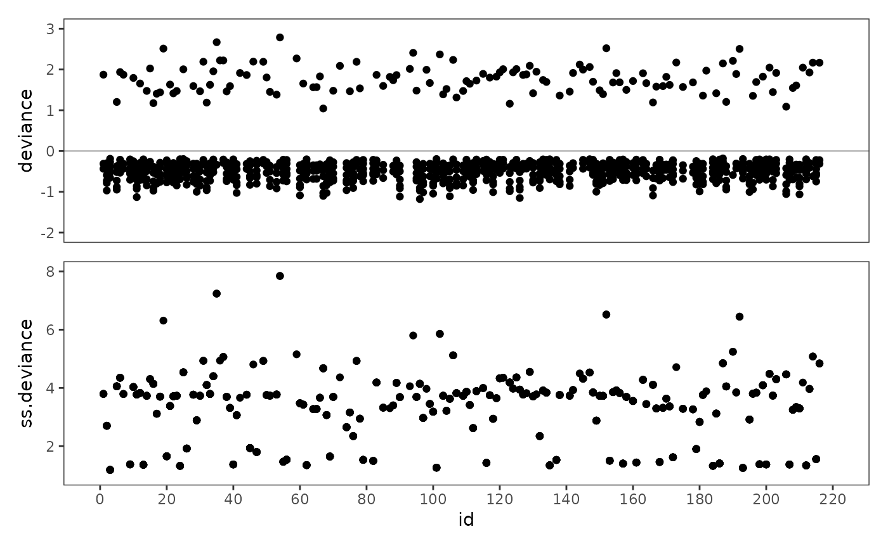

Chapter 12: Extending the discrete-time hazard model
Source:vignettes/articles/chapter-12.Rmd
chapter-12.Rmd
library(alda)
library(dplyr)
library(tidyr)
library(purrr)
library(stringr)
library(glmmTMB)
library(broom)
library(broom.mixed)
library(ggplot2)
library(scales)
library(patchwork)
library(modelsummary)
library(gt)12.1 Alternative specifications for the “main effect” of
time
In Section 12.1 Singer and Willett (2003) discuss alternative functional forms for the shape of the discrete-time hazard function using data from Gamse and Conger (1997), who measured the number of years to receiving tenure in a sample of 260 semifinalists and fellowship recipients in the National Academy of Education–Spencer Foundation Post-Doctoral Fellowship Program who took an academic job after earning a doctorate. Academics were followed for up to nine years or until they received tenure.
For this example we use the tenure data set, a
person-level data frame with 260 rows and 3 columns:
-
id: Participant ID. -
years: Number of years to receiving tenure. -
censor: Censoring status.
tenure
#> # A tibble: 260 × 3
#> id years censor
#> <fct> <dbl> <dbl>
#> 1 111 5 0
#> 2 211 6 0
#> 3 311 8 1
#> 4 411 9 0
#> 5 511 3 0
#> 6 611 6 0
#> 7 711 5 0
#> 8 811 5 1
#> 9 911 7 0
#> 10 1011 8 0
#> # ℹ 250 more rowsWhen introducing the basic discrete-time hazard model in Chapter 11,
Singer and Willett (2003) suggested beginning with a model that placed
no constraints on the shape of the hazard function over time (i.e., a
completely general functional form). This resulted in a model that was
easily interpretable, informative about the temporal shape of hazard,
and consistent with life table estimates. However, use of a completely
general functional form for time is not an integral feature
of the model—any time predictor can be treated as a
continuous variable, allowing any number of alternative functional forms
for the shape of the discrete-time hazard function.
As Singer and Willett (2003) discuss, specification for
time in the discrete-time hazard model should be motivated
by a combination of theory, previous research, and exploratory analysis,
and serious consideration of alternative functional forms should be
given when:
- A study involves many discrete time periods.
- Hazard is expected to be near zero in some time periods.
- Some time periods have small risk sets.
As in choosing the functional form of an individual growth model, the
specification for time in the discrete-time hazard model
can take on any number of functional forms, including (but not limited
to):
- Discontinuities (Section 6.1).
- Transformations in the ladder of powers (Section 6.2).
- Polynomial forms (Section 6.3).
- Truly nonlinear trajectories (Section 6.4).
Following Singer and Willett (2003), here we will explore the use of
an ordered set of polynomials as the specification for time
in the discrete-time hazard model—with a focus on choosing a “final”
polynomial trajectory. Before fitting these models, we first need to
convert the person-level tenure data set to a person-period
data set.
tenure_pp <- tenure |>
group_by(id) |>
reframe(
year = 1:max(years),
event = if_else(year == years & censor == 0, 1, 0)
)
tenure_pp
#> # A tibble: 1,474 × 3
#> id year event
#> <fct> <int> <dbl>
#> 1 111 1 0
#> 2 111 2 0
#> 3 111 3 0
#> 4 111 4 0
#> 5 111 5 1
#> 6 211 1 0
#> 7 211 2 0
#> 8 211 3 0
#> 9 211 4 0
#> 10 211 5 0
#> # ℹ 1,464 more rowsHere will fit seven discrete-time hazard models to the
tenure_pp person-period data set: six models of increasing
polynomial order (starting from a zero-order polynomial), and a model
with a completely general functional form for the “main effect” of
time.
tenure_fit_constant <- glm(event ~ 1, family = "binomial", data = tenure_pp)
tenure_fit_linear <- update(tenure_fit_constant, . ~ year)
tenure_fit_quadratic <- update(tenure_fit_linear, . ~ . + I(year^2))
tenure_fit_cubic <- update(tenure_fit_quadratic, . ~ . + I(year^3))
tenure_fit_order_4 <- update(tenure_fit_cubic, . ~ . + I(year^4))
tenure_fit_order_5 <- update(tenure_fit_order_4, . ~ . + I(year^5))
tenure_fit_general <- update(tenure_fit_constant, . ~ 0 + factor(year))
tenure_fits <- list(
"Constant" = tenure_fit_constant,
"Linear" = tenure_fit_linear,
"Quadratic" = tenure_fit_quadratic,
"Cubic" = tenure_fit_cubic,
"Fourth order" = tenure_fit_order_4,
"Fifth order" = tenure_fit_order_5,
"General" = tenure_fit_general
)Comparing alternative specifications for the “main effect” of
time
To select a “final” model among these alternatives, Singer and Willett (2003) recommend comparing the fit of competing specifications with the following approach:
- Compare the models graphically by plotting their fitted logit hazard
functions together. Models based on alternative specifications for
timeshould be compared against the completely general specification, identifying whether and which of these models can suitably reproduce the general functional form parsimoniously. - Compare deviance statistics across models of increasing temporal
complexity, identifying the most parsimonious alternative specifications
for
time. - Compare deviance statistics for each alternative specification to
the completely general specification, identifying which of the most
parsimonious alternative specifications for
timefit better than the completely general specification. - Examine AIC and BIC statistics to supplement the comparisons of deviance statistics.
Working through this process, if you identify an alternative
specification for time that fits nearly as well as the
completely general one, appreciably better than all simpler ones, and no
worse than all more complex ones, consider selecting it as your “final”
model. However, if none of the alternative specifications for
time meet these criteria, consider retaining the completely
general specification as your “final” model.
We begin by plotting the fitted logit hazard functions together. Following Singer and Willett (2003), we omit the fitted functions for the fourth order and fifth order polynomials because their deviance statistics suggest we cannot distinguish them from the cubic polynomial.
tenure_preds <- tenure_fits |>
discard_at(c("Fourth order", "Fifth order")) |>
map(\(.fit) augment(.fit, newdata = tibble(year = 1:9))) |>
list_rbind(names_to = "time") |>
mutate(
time = factor(
time,
levels = names(discard_at(tenure_fits, c("Fourth order", "Fifth order")))
)
)
# Figure 12.1, page 414 (top):
ggplot(tenure_preds, aes(x = year, y = .fitted, colour = time)) +
geom_line() +
scale_color_brewer(palette = "Dark2") +
scale_x_continuous(breaks = 1:9)
Next we compare goodness-of-fit statistics of the alternative and completely general models.
# Compare models --------------------------------------------------------------
tenure_anovas_poly <- with(
tenure_fits[1:6],
do.call(anova, c(map(names(tenure_fits[1:6]), as.name), test = "LRT"))
)
tenure_anovas_general <- map(
tenure_fits[1:6],
\(.fit) anova(.fit, tenure_fit_general, test = "LRT")
)
# Make table ------------------------------------------------------------------
tenure_anovas_poly_tidy <- tenure_anovas_poly |>
tidy() |>
select(
deviance = residual.deviance,
previous_model = deviance,
p.previous = p.value
) |>
mutate(time = names(tenure_fits[1:6]), .before = deviance)
tenure_anovas_general_tidy <- tenure_anovas_general |>
map(tidy) |>
list_rbind(names_to = "time") |>
na.omit() |>
select(time, general_model = deviance, p.general = p.value)
# Table 12.2, page 413:
tenure_anovas_poly_tidy |>
left_join(tenure_anovas_general_tidy) |>
add_row(time = "General", deviance = deviance(tenure_fit_general)) |>
mutate(
AIC = map_dbl(tenure_fits, AIC),
BIC = map_dbl(tenure_fits, BIC),
across(where(is.numeric), \(.x) round(.x, digits = 2))
)
#> # A tibble: 7 × 8
#> time deviance previous_model p.previous general_model p.general AIC BIC
#> <chr> <dbl> <dbl> <dbl> <dbl> <dbl> <dbl> <dbl>
#> 1 Consta… 1038. NA NA 206. 0 1040. 1045.
#> 2 Linear 867. 170. 0 36.3 0 871. 882.
#> 3 Quadra… 836. 31.2 0 5.1 0.53 842. 858.
#> 4 Cubic 833. 3.13 0.08 1.97 0.85 841. 862.
#> 5 Fourth… 833. 0.43 0.51 1.54 0.82 843. 869.
#> 6 Fifth … 833. 0.01 0.92 1.53 0.68 845. 877.
#> 7 General 831. NA NA NA NA 849. 897.Following the approach recommended by Singer and Willett (2003), we would select the quadratic polynomial model as our “final” model. We can see that this model has a similar but more parsimonious functional form by comparing the fitted hazard and survival functions of the quadratic polynomial model to the completely general model.
First we will get the fitted hazard and survival functions for both models.
tenure_preds_final <- tenure_preds |>
filter(time %in% c("Quadratic", "General")) |>
group_by(time) |>
mutate(
haz.fitted = 1 / (1 + exp(-.fitted)),
surv.fitted = cumprod(1 - haz.fitted)
) |>
group_modify(
\(.group, ...) add_row(.group, year = 0, surv.fitted = 1, .before = 1)
)
tenure_preds_final
#> # A tibble: 20 × 5
#> # Groups: time [2]
#> time year .fitted haz.fitted surv.fitted
#> <fct> <dbl> <dbl> <dbl> <dbl>
#> 1 Quadratic 0 NA NA 1
#> 2 Quadratic 1 -5.86 0.00286 0.997
#> 3 Quadratic 2 -4.37 0.0125 0.985
#> 4 Quadratic 3 -3.13 0.0419 0.943
#> 5 Quadratic 4 -2.15 0.105 0.845
#> 6 Quadratic 5 -1.41 0.196 0.679
#> 7 Quadratic 6 -0.927 0.283 0.486
#> 8 Quadratic 7 -0.695 0.333 0.325
#> 9 Quadratic 8 -0.714 0.329 0.218
#> 10 Quadratic 9 -0.984 0.272 0.159
#> 11 General 0 NA NA 1
#> 12 General 1 -4.86 0.00769 0.992
#> 13 General 2 -4.13 0.0158 0.977
#> 14 General 3 -3.38 0.0328 0.945
#> 15 General 4 -2.28 0.0925 0.857
#> 16 General 5 -1.47 0.187 0.697
#> 17 General 6 -0.693 0.333 0.465
#> 18 General 7 -0.785 0.313 0.319
#> 19 General 8 -0.633 0.347 0.208
#> 20 General 9 -1.34 0.208 0.165Then we can plot them.
tenure_fits_final_haz <- tenure_preds_final |>
ggplot(aes(x = year, y = haz.fitted, colour = time)) +
geom_line() +
scale_colour_manual(values = pal_brewer(palette = "Dark2")(5)[c(3, 5)]) +
scale_x_continuous(breaks = 0:9)
tenure_fits_final_surv <- tenure_fits_final_haz + aes(y = surv.fitted)
# Figure 12.1, page 414 (bottom):
tenure_fits_final_haz + tenure_fits_final_surv +
plot_layout(guides = "collect")
12.2 Using the complementary log-log link to specify a discrete-time hazard model
In Section 12.2 Singer and Willett (2003) discuss the complementary log-log (aka clog-log) transformation as an alternative link function for the discrete-time hazard model using a subset of data from Capaldi, Crosby, and Stoolmiller (1996), who measured the grade year of first sexual intercourse in a sample of 180 at-risk heterosexual adolescent males. Adolescent males were followed from Grade 7 up to Grade 12 or until they reported having had sexual intercourse for the first time.
For this example we return to the first_sex data set
introduced in Chapter 10, a person-level data frame with 180 rows and 5
columns:
-
id: Participant ID. -
grade: Grade year of first sexual intercourse. -
censor: Censoring status. -
parental_transition: Binary indicator for whether the adolescent experienced a parental transition (where their parents separated or repartnered). -
parental_antisociality: Composite score across four indicators measuring parents’ level of antisocial behaviour during the child’s formative years.
first_sex
#> # A tibble: 180 × 5
#> id grade censor parental_transition parental_antisociality
#> <fct> <dbl> <dbl> <dbl> <dbl>
#> 1 1 9 0 0 1.98
#> 2 2 12 1 1 -0.545
#> 3 3 12 1 0 -1.40
#> 4 5 12 0 1 0.974
#> 5 6 11 0 0 -0.636
#> 6 7 9 0 1 -0.243
#> 7 9 12 1 0 -0.869
#> 8 10 11 0 0 0.454
#> 9 11 12 1 1 0.802
#> 10 12 11 0 1 -0.746
#> # ℹ 170 more rowsAs usual, we begin by converting the person-level
first_sex data set to a person-period data set to
facilitate subsequent exploratory analysis and model fitting.
first_sex_pp <- first_sex |>
rename(grades = grade) |>
group_by(id) |>
reframe(
grade = 7:max(grades),
event = if_else(grade == grades & censor == 0, 1, 0),
parental_transition,
parental_antisociality
)
first_sex_pp
#> # A tibble: 822 × 5
#> id grade event parental_transition parental_antisociality
#> <fct> <int> <dbl> <dbl> <dbl>
#> 1 1 7 0 0 1.98
#> 2 1 8 0 0 1.98
#> 3 1 9 1 0 1.98
#> 4 2 7 0 1 -0.545
#> 5 2 8 0 1 -0.545
#> 6 2 9 0 1 -0.545
#> 7 2 10 0 1 -0.545
#> 8 2 11 0 1 -0.545
#> 9 2 12 0 1 -0.545
#> 10 3 7 0 0 -1.40
#> # ℹ 812 more rowsNext, we will explore sample hazard functions for the
first_sex data using life table methods on the
logit and complementary log-log scales. Following from
the Chapter 11 examples for the first_sex data, our
research question again centres on modelling the relationship between
hazard and the time-invariant parental_transition
predictor—therefore, we will create a life table stratified by values of
parental_transition.
first_sex_lifetable <- first_sex_pp |>
group_by(parental_transition, grade) |>
summarise(
n.risk = n(),
n.event = sum(event == 1),
n.censor = sum(event == 0),
haz.estimate = n.event / n.risk
)
first_sex_lifetable
#> # A tibble: 12 × 6
#> # Groups: parental_transition [2]
#> parental_transition grade n.risk n.event n.censor haz.estimate
#> <dbl> <int> <int> <int> <int> <dbl>
#> 1 0 7 72 2 70 0.0278
#> 2 0 8 70 2 68 0.0286
#> 3 0 9 68 8 60 0.118
#> 4 0 10 60 8 52 0.133
#> 5 0 11 52 10 42 0.192
#> 6 0 12 42 8 34 0.190
#> 7 1 7 108 13 95 0.120
#> 8 1 8 95 5 90 0.0526
#> 9 1 9 90 16 74 0.178
#> 10 1 10 74 21 53 0.284
#> 11 1 11 53 15 38 0.283
#> 12 1 12 38 18 20 0.474We can define functions for each of these transformations to
transform the estimated hazard probabilities in the
first_sex life table to different scales.
odds <- function(x) x / (1 - x)
log_odds <- function(x) log(odds(x))
cloglog <- function(x) log(-log(1 - x))
first_sex_lifetable <- first_sex_lifetable |>
mutate(
logit.estimate = log_odds(haz.estimate),
cloglog.estimate = cloglog(haz.estimate)
)
first_sex_lifetable
#> # A tibble: 12 × 8
#> # Groups: parental_transition [2]
#> parental_transition grade n.risk n.event n.censor haz.estimate logit.estimate
#> <dbl> <int> <int> <int> <int> <dbl> <dbl>
#> 1 0 7 72 2 70 0.0278 -3.56
#> 2 0 8 70 2 68 0.0286 -3.53
#> 3 0 9 68 8 60 0.118 -2.01
#> 4 0 10 60 8 52 0.133 -1.87
#> 5 0 11 52 10 42 0.192 -1.44
#> 6 0 12 42 8 34 0.190 -1.45
#> 7 1 7 108 13 95 0.120 -1.99
#> 8 1 8 95 5 90 0.0526 -2.89
#> 9 1 9 90 16 74 0.178 -1.53
#> 10 1 10 74 21 53 0.284 -0.926
#> 11 1 11 53 15 38 0.283 -0.930
#> 12 1 12 38 18 20 0.474 -0.105
#> # ℹ 1 more variable: cloglog.estimate <dbl>As Singer and Willett (2003) discuss, like the logit transformation, the complementary log-log transformation maps probabilities onto a scale with no upper or lower bounds. However, they differ in that:
- The logit transformation yields the logarithm of the odds of event occurrence.
- The complementary log-log transformation yields the logarithm of the negated logarithm of the probability of event nonoccurrence.
- The logit transformation is symmetric on either side of the “median” hazard probability of 0.5, whereas the complementary log-log transformation is asymmetric.
The practical consequence of these differences is that the two
transformations provide similar estimates when hazard is small, but
consistently diverge as hazard increases, which we can see by sample
hazard functions for the first_sex data.
# Figure 12.3, page 423:
first_sex_lifetable |>
select(parental_transition, grade, logit.estimate, cloglog.estimate) |>
pivot_longer(
cols = c(logit.estimate, cloglog.estimate),
names_to = "transform",
names_pattern = "(.*)\\.estimate",
values_to = "haz.estimate"
) |>
mutate(parental_transition = as.logical(parental_transition)) |>
ggplot(aes(x = grade, y = haz.estimate)) +
geom_line(aes(colour = parental_transition, linetype = transform)) +
scale_colour_brewer(palette = "Dark2")
Fitting the discrete-time hazard model using a complementary log-log link proceeds in the same way as when a logit link is used, invoking the same assumptions about the behaviour of complementary log-log hazard as we would about logit hazard. However, they differ in their proportionality assumptions:
- The discrete-time hazard model with logit link is a proportional odds model whose antilogged slope parameter estimates are odds ratios, which we assume are proportional over time across all possible values of the predictor (or combinations of predictors).
- The discrete-time hazard model with complementary log-log link is a proportional hazards model whose antilogged slope parameter estimates are hazard ratios, which we assume are proportional over time across all possible values of the predictor (or combinations of predictors).
The significance of this difference is that the proportional hazards assumption invoked by the complementary log-log link yields a discrete-time hazard model that is directly analogous to the continuous-time hazard model. Given this, Singer and Willett (2003) recommend the following when choosing a link function for the discrete-time hazard model:
- When data are collected in truly discrete time, the complementary log-log link has no particular advantage over the logit link. Parameter estimates and goodness-of-fit statistics tend to be similar when fitting identical models with alternate link functions, and the primary difference between these two specifications is the effect size metric for the antilogged slope parameter estimates (odds ratios or hazard ratios).
- When underlying metric for time is truly continuous—but the data are collected in discrete time due to measurement difficulties—the complementary log-log link is preferable to the logit link. This is the case when analyzing interval-censored data, wherein events unfold in continuous time, but information about event occurrence is restricted to discrete-time intervals.
Here we will fit two discrete-time hazard models to the
first_sex_pp person-period data set: one with a
complementary log-log link, and another with a logit link.
# Define inverse transformation functions -------------------------------------
log_odds_inv <- function(x) 1 / (1 + exp(-x))
cloglog_inv <- function(x) 1 - exp(-exp(x))
# Fit models ------------------------------------------------------------------
first_sex_fits <- map(
list(cloglog = "cloglog", logit = "logit"),
\(.link) {
glm(
event ~ -1 + factor(grade) + parental_transition,
family = binomial(link = .link),
data = first_sex_pp
)
}
)
# Make table ------------------------------------------------------------------
# Table 12.3, page 424:
first_sex_fits |>
map(tidy) |>
list_cbind() |>
unnest_wider(col = c(cloglog, logit), names_sep = ".") |>
select(term = cloglog.term, cloglog.estimate, logit.estimate) |>
mutate(
term = coef_rename(term, factor_name = FALSE),
cloglog.haz = if_else(
term != "parental_transition", cloglog_inv(cloglog.estimate), NA
),
logit.haz = if_else(
term != "parental_transition", log_odds_inv(logit.estimate), NA
)
) |>
add_row(
term = "Deviance",
cloglog.estimate = deviance(first_sex_fits$cloglog),
logit.estimate = deviance(first_sex_fits$logit)
)
#> # A tibble: 8 × 5
#> term cloglog.estimate logit.estimate cloglog.haz logit.haz
#> <chr> <dbl> <dbl> <dbl> <dbl>
#> 1 Grade 7 -2.97 -2.99 0.0498 0.0477
#> 2 Grade 8 -3.66 -3.70 0.0254 0.0241
#> 3 Grade 9 -2.32 -2.28 0.0940 0.0927
#> 4 Grade 10 -1.90 -1.82 0.139 0.139
#> 5 Grade 11 -1.76 -1.65 0.158 0.161
#> 6 Grade 12 -1.34 -1.18 0.230 0.235
#> 7 Parental Transition 0.785 0.874 0.888 0.705
#> 8 Deviance 635. 635. NA NA12.3 Time-varying predictors
In Section 12.3 Singer and Willett (2003) demonstrate how to fit the discrete-time hazard model for data with time-varying predictors using a subset of data from Wheaton, Rozell, and Hall (1997), who measured the relation between age of first depressive episode and several childhood and adult traumatic stressors in a random sample of 1393 adults living in metropolitan Toronto, Ontario. Age of first depressive episode and traumatic stressors was determined through a structured interview.
For this example we use the first_depression_1 data set,
a person-period data frame with 36997 rows and 7 columns:
-
id: Participant ID. -
age: Age each record corresponds to. -
event: Binary indicator for whether and when the adult experienced a depressive episode. -
censor: Censoring status. -
parental_divorce: Binary indicator for whether the adult’s parents divorced at this or any previous age. -
female: Binary indicator for whether the adult is a female. -
siblings: Number of siblings.
first_depression_1
#> # A tibble: 36,997 × 7
#> id age event censor parental_divorce female siblings
#> <fct> <dbl> <dbl> <dbl> <dbl> <dbl> <dbl>
#> 1 1 4 0 1 0 1 6
#> 2 1 5 0 1 0 1 6
#> 3 1 6 0 1 0 1 6
#> 4 1 7 0 1 0 1 6
#> 5 1 8 0 1 0 1 6
#> 6 1 9 0 1 0 1 6
#> 7 1 10 0 1 0 1 6
#> 8 1 11 0 1 0 1 6
#> 9 1 12 0 1 0 1 6
#> 10 1 13 0 1 0 1 6
#> # ℹ 36,987 more rowsNo special strategies are needed to fit the discrete-time hazard model with time-varying predictors. However, as Singer and Willett (2003) discuss, the inclusion of time-varying predictors in a model requires restatements of the three assumptions inherent to basic discrete-time hazard models presented in Chapter 11. We now assume that:
- There is a postulated value of logit hazard for each value of the time-varying predictor (or for each combination of predictor values for models with more than one predictor) at each point in time. Therefore, the effect of a time-varying predictor compares different groups of people at different times, rather than static groups of people at different times.
- Joining consecutive postulated values of logit hazard will yield hazard functions that have an identical shape for constant values of the time-varying predictor(s). Similar to time-varying predictors for the multilevel model for change (Section 5.3), the most extreme lower and upper constant values of the time-varying predictor(s) can be thought of as an envelope representing the complete set of population logit hazard functions for all possible temporal patterns of the time-varying predictor.
- The distance between each of these logit hazard functions is identical in every time period. Therefore, the effect of a time-varying predictor is identical over time.
To clarify these assumptions, here we will fit and plot a model with
a cubic polynomial form for age and the time-varying
predictor parental_divorce to the
first_depression_1 data, along with sample (logit) hazard
functions from the life table.
# Make life table -------------------------------------------------------------
first_depression_lifetable <- first_depression_1 |>
mutate(parental_divorce = as.logical(parental_divorce)) |>
group_by(parental_divorce, age) |>
summarise(
n.risk = n(),
n.event = sum(event == 1),
n.censor = sum(event == 0),
haz.estimate = n.event / n.risk,
haz.estimate = if_else(haz.estimate == 0, NA, haz.estimate),
log_odds.estimate = log_odds(haz.estimate),
.groups = "drop_last"
)
# Fit model -------------------------------------------------------------------
first_depression_fit_1 <- glm(
event ~ poly(I(age - 18), 3, raw = TRUE) + parental_divorce,
family = binomial(link = "logit"),
data = first_depression_1
)
# When a predictor enters the model as part of a matrix of covariates, such as
# with stats::poly(), it is represented in augment() as a matrix column. A simple
# workaround to get the predictor on its original scale as a vector is to pass
# the original data to augment().
first_depression_preds_1 <- first_depression_fit_1 |>
augment(data = first_depression_1, type.predict = "response") |>
rename(haz.estimate = .fitted) |>
mutate(
log_odds.estimate = log_odds(haz.estimate),
parental_divorce = as.logical(parental_divorce)
)
# Plot ------------------------------------------------------------------------
first_depression_fit_1_haz <- ggplot() +
aes(x = age, y = haz.estimate, colour = parental_divorce) +
geom_point(data = first_depression_lifetable) +
geom_line(data = first_depression_preds_1) +
scale_colour_brewer(palette = "Dark2") +
scale_x_continuous(breaks = seq(0, 40, by = 5)) +
coord_cartesian(xlim = c(0, 40), ylim = c(0, 0.06))
first_depression_fit_1_logit <- first_depression_fit_1_haz +
aes(y = log_odds.estimate) +
scale_y_continuous(breaks = seq(-8, -2, by = 1)) +
coord_cartesian(xlim = c(0, 40), ylim = c(-8, -2))
# Figure 12.4, page 432:
first_depression_fit_1_haz / first_depression_fit_1_logit +
plot_layout(guides = "collect", axes = "collect")
Plotting the effects of time-varying predictors
When plotting fitted hazard and survivor functions for prototypical individuals, Singer and Willett (2003) suggest the following strategies for selecting prototypical values for time-varying predictors:
- For time-varying predictors whose values can remain constant over time, choose time-invariant values that represent an envelope of all possible temporal patterns of the time-varying predictor.
- For time-varying predictors whose values cannot remain constant over time, choose time-varying values that reflect substantively interesting temporal patterns.
Here here we will demonstrate the first of these strategies using an
updated version of the first_depression_fit_1 model that
includes a predictor for sex.
# Fit model -------------------------------------------------------------------
first_depression_fit_2 <- update(first_depression_fit_1, . ~ . + female)
# Make predictions ------------------------------------------------------------
first_depression_preds_2 <- first_depression_fit_2 |>
augment(
newdata = crossing(
age = 4:39, parental_divorce = c(0, 1), female = c(0, 1)
),
type.predict = "response"
) |>
rename(haz.estimate = .fitted) |>
group_by(parental_divorce, female) |>
mutate(
parental_divorce = as.logical(parental_divorce),
female = as.logical(female),
surv.estimate = cumprod(1 - haz.estimate)
) |>
group_modify(
\(.group, ...) add_row(.group, age = 3, surv.estimate = 1, .before = 1)
)
# Plot ------------------------------------------------------------------------
first_depression_fit_2_haz <- first_depression_preds_2 |>
ggplot(aes(x = age, y = haz.estimate)) +
geom_line(aes(linetype = parental_divorce, colour = female)) +
scale_colour_brewer(palette = "Dark2") +
scale_x_continuous(breaks = seq(0, 40, by = 5)) +
coord_cartesian(xlim = c(0, 40), ylim = c(0, 0.04))
first_depression_fit_2_surv <- first_depression_fit_2_haz +
aes(y = surv.estimate) +
coord_cartesian(xlim = c(0, 40), ylim = c(0, 1))
# Figure 12.5, page 437:
first_depression_fit_2_haz / first_depression_fit_2_surv +
plot_layout(guides = "collect", axes = "collect")
12.4 The linear additivity assumption: Uncovering violations and simple solutions
In Section 12.4 Singer and Willett (2003) introduce practical strategies for diagnosing and correcting violations of the discrete-time hazard model’s linear additivity assumption, which stipulates that unit differences in the value of a (time-invariant or time-varying) predictor correspond to fixed differences in logit hazard. In other words, we postulate that a predictor’s effect is:
- Additive: It does not depend upon the values of other predictors in the model (i.e., there are no interactions between substantive predictors).
- Linear: It does not depend upon the position of the unit difference along its scale (i.e., there are no nonlinear effects).
Interactions between substantive predictors
Singer and Willett (2003) illustrate strategies for identifying possible interactions between substantive predictors using data from Keiley and Martin (2002), who measured the effect of child abuse on the risk of first juvenile arrest in a sample of 1553 adolescents aged 8 to 18. Adolescents were followed up to age 18 or until they were arrested.
For this example we use the first_arrest data set, a
person-period data frame with 15834 rows and 5 columns:
-
id: Participant ID. -
age: Age each record corresponds to. -
event: Binary indicator for whether the adolescent was arrested.-censor: Censoring status. -
abused: Binary indicator for whether the adolescent was abused. -
black: Binary indicator for whether the adolescent is black.
first_arrest
#> # A tibble: 15,834 × 6
#> id age event censor abused black
#> <fct> <dbl> <dbl> <dbl> <dbl> <dbl>
#> 1 1 8 0 0 0 0
#> 2 1 9 0 0 0 0
#> 3 1 10 0 0 0 0
#> 4 1 11 0 0 0 0
#> 5 1 12 0 0 0 0
#> 6 1 13 0 0 0 0
#> 7 1 14 0 0 0 0
#> 8 1 15 1 0 0 0
#> 9 2 8 0 1 1 0
#> 10 2 9 0 1 1 0
#> # ℹ 15,824 more rowsSinger and Willett (2003) recommend using two strategies to identify possible interactions between substantive predictors:
- Examine plots of sample (logit) hazard functions for evidence that the magnitude of the differential in hazard varies across groups.
- Compare goodness-of-fit statistics of nested models that include and exclude an interaction term.
To demonstrate the first strategy, we begin by constructing a life
table for the first_arrest, which we will use to explore
the possibility of an interaction between the abused and
black predictors.
first_arrest_lifetable <- first_arrest |>
mutate(across(c(abused, black), as.logical)) |>
group_by(abused, black, age) |>
summarise(
n.risk = n(),
n.event = sum(event == 1),
n.censor = sum(event == 0),
haz.estimate = n.event / n.risk,
haz.estimate = if_else(haz.estimate == 0, NA, haz.estimate),
log_odds.estimate = log_odds(haz.estimate),
.groups = "drop_last"
) |>
na.omit()
first_arrest_lifetable
#> # A tibble: 39 × 8
#> # Groups: abused, black [4]
#> abused black age n.risk n.event n.censor haz.estimate log_odds.estimate
#> <lgl> <lgl> <dbl> <int> <int> <int> <dbl> <dbl>
#> 1 FALSE FALSE 8 434 1 433 0.00230 -6.07
#> 2 FALSE FALSE 10 433 2 431 0.00462 -5.37
#> 3 FALSE FALSE 11 431 5 426 0.0116 -4.45
#> 4 FALSE FALSE 13 426 7 419 0.0164 -4.09
#> 5 FALSE FALSE 14 419 9 410 0.0215 -3.82
#> 6 FALSE FALSE 15 410 19 391 0.0463 -3.02
#> 7 FALSE FALSE 16 391 10 381 0.0256 -3.64
#> 8 FALSE FALSE 17 381 10 371 0.0262 -3.61
#> 9 FALSE FALSE 18 368 3 365 0.00815 -4.80
#> 10 FALSE TRUE 9 232 1 231 0.00431 -5.44
#> # ℹ 29 more rowsNow we can plot the sample (logit) hazard functions. Notice that the magnitude of the differential in (logit) hazard associated with abuse is visibly larger for black adolescents compared to white adolescents.
# Figure 12.6, page 445 (top):
first_arrest_lifetable |>
ggplot(aes(x = age, y = log_odds.estimate, colour = black, linetype = abused)) +
geom_line() +
scale_colour_brewer(palette = "Dark2") +
scale_x_continuous(breaks = 7:19) +
coord_cartesian(xlim = c(7, 19), ylim = c(-7, -2)) +
facet_wrap(vars(black), labeller = label_both) +
ggtitle("Sample (logit) hazard functions") +
theme(strip.background = element_blank(), strip.text.x = element_blank())
We can test for this interaction by comparing goodness-of-fit statistics of nested models that include and exclude an interaction term. Equivalently, as we demonstrate here, we can also examine a sequential analysis of deviance table for the model that includes an interaction term, rather than fitting two models (so long as the interaction is the final term in the model formula).
first_arrest_fit <- glm(
event ~ 0 + factor(age) + abused + black + abused:black,
family = binomial(link = "logit"),
data = first_arrest
)
anova(first_arrest_fit, test = "LRT")
#> Analysis of Deviance Table
#>
#> Model: binomial, link: logit
#>
#> Response: event
#>
#> Terms added sequentially (first to last)
#>
#>
#> Df Deviance Resid. Df Resid. Dev Pr(>Chi)
#> NULL 15834 21950.6
#> factor(age) 11 18850.0 15823 3100.6 < 2.2e-16 ***
#> abused 1 22.0 15822 3078.6 2.774e-06 ***
#> black 1 25.2 15821 3053.4 5.287e-07 ***
#> abused:black 1 4.0 15820 3049.4 0.04421 *
#> ---
#> Signif. codes: 0 '***' 0.001 '**' 0.01 '*' 0.05 '.' 0.1 ' ' 1As usual, we can interpret interaction effects by examining combined parameter estimates or fitted hazard (and survivor) functions for prototypical individuals.
First the combined parameter estimates. A simple way to obtain these
estimates is to use the type.predict = "terms" argument in
the augment() function, which returns a matrix giving the
value of each coefficient multiplied by the prototypical values. Summing
each row of the matrix and antilogging the totals results in an odds
ratio for each prototypical individual.
first_arrest_fit |>
augment(
newdata = crossing(age = NA, abused = c(0, 1), black = c(0, 1)),
type.predict = "terms"
) |>
mutate(.fitted = exp(rowSums(.fitted, na.rm = TRUE))) |>
select(abused, black, odds_ratio = .fitted)
#> # A tibble: 4 × 3
#> abused black odds_ratio
#> <dbl> <dbl> <dbl>
#> 1 0 0 1
#> 2 0 1 1.28
#> 3 1 0 1.43
#> 4 1 1 2.96Then plots of fitted hazard functions.
first_arrest_preds <- first_arrest_fit |>
augment(
newdata = crossing(age = 8:18, abused = c(0, 1), black = c(0, 1)),
type.predict = "link"
) |>
rename(log_odds.estimate = .fitted) |>
mutate(across(c(abused, black), as.logical))
# Figure 12.6, page 445 (bottom):
first_arrest_preds |>
ggplot(aes(x = age, y = log_odds.estimate, colour = black, linetype = abused)) +
geom_line() +
scale_colour_brewer(palette = "Dark2") +
scale_x_continuous(breaks = 7:19) +
coord_cartesian(xlim = c(7, 19), ylim = c(-7, -2)) +
ggtitle("Fitted (logit) hazard functions")
Nonlinear effects
Singer and Willett (2003) suggest two general strategies for exploring the linearity assumption and identifying an appropriate nonlinear functional form for any predictors:
- Transform predictors so that relationships become linear on the transformed scale, but nonlinear on the raw scale (a la Section 6.2).
- Categorize each continuous predictor into a small number of groups represented by dummy variables, then examine the pattern of parameter estimates for consecutive dummy variables to deduce the appropriate (nonlinear) functional form. Equally spaced parameter estimates suggest a linear effect, and unequally spaced parameter estimates suggest a nonlinear effect.
We return to the first_depression_fit_2 model from
Section 12.3 to demonstrate the second strategy, examining the effect of
a third predictor, siblings. Here we will fit three
discrete-time hazard models to the first_depression_1 data:
A model that adds siblings in its raw form (Model A), a
model that categorizes siblings into a system of dummy
variables (Model B), a model that splits siblings into two
groups based on the pattern of parameter estimates in Model B (Model C),
and a model that gives a cubic siblings specification
(Model D).
# Fit models ------------------------------------------------------------------
first_depression_fit_A <- update(first_depression_fit_2, . ~ . + siblings)
first_depression_fit_B <- update(
first_depression_fit_2,
. ~ . +
between(siblings, 1, 2) +
between(siblings, 3, 4) +
between(siblings, 5, 6) +
between(siblings, 7, 8) +
between(siblings, 9, Inf)
)
first_depression_fit_C <- update(first_depression_fit_2, . ~ . + I(siblings >= 5))
first_depression_fit_D <- update(
first_depression_fit_2, . ~ . + poly(siblings, 3, raw = TRUE)
)
first_depression_fits <- list(
"Model A" = first_depression_fit_A,
"Model B" = first_depression_fit_B,
"Model C" = first_depression_fit_C,
"Model D" = first_depression_fit_D
)
# Make table ------------------------------------------------------------------
options(modelsummary_get = "all")
# Table 12.4, page 449:
first_depression_fits |>
modelsummary(
fmt = 4,
coef_rename = coef_rename,
gof_map = c("deviance", "AIC"),
output = "gt"
)| Model A | Model B | Model C | Model D | |
|---|---|---|---|---|
| (Intercept) | -4.3587 | -4.5001 | -4.4828 | -4.3943 |
| (0.1216) | (0.2067) | (0.1087) | (0.1513) | |
| Poly((Age - 18), 3, Raw = TRUE)1 | 0.0611 | 0.0615 | 0.0614 | 0.0613 |
| (0.0117) | (0.0117) | (0.0117) | (0.0117) | |
| Poly((Age - 18), 3, Raw = TRUE)2 | -0.0073 | -0.0073 | -0.0073 | -0.0073 |
| (0.0012) | (0.0012) | (0.0012) | (0.0012) | |
| Poly((Age - 18), 3, Raw = TRUE)3 | 0.0002 | 0.0002 | 0.0002 | 0.0002 |
| (0.0001) | (0.0001) | (0.0001) | (0.0001) | |
| Parental Divorce | 0.3726 | 0.3727 | 0.3710 | 0.3731 |
| (0.1624) | (0.1625) | (0.1623) | (0.1624) | |
| Female | 0.5587 | 0.5596 | 0.5581 | 0.5655 |
| (0.1095) | (0.1095) | (0.1095) | (0.1097) | |
| Siblings | -0.0814 | |||
| (0.0223) | ||||
| Between(Siblings, 1, 2)TRUE | 0.0209 | |||
| (0.1976) | ||||
| Between(Siblings, 3, 4)TRUE | 0.0108 | |||
| (0.2100) | ||||
| Between(Siblings, 5, 6)TRUE | -0.4942 | |||
| (0.2545) | ||||
| Between(Siblings, 7, 8)TRUE | -0.7754 | |||
| (0.3437) | ||||
| Between(Siblings, 9, Inf)TRUE | -0.6585 | |||
| (0.3440) | ||||
| (Siblings >= 5)TRUE | -0.6108 | |||
| (0.1446) | ||||
| Poly(Siblings, 3, Raw = TRUE)1 | -0.0375 | |||
| (0.0782) | ||||
| Poly(Siblings, 3, Raw = TRUE)2 | -0.0109 | |||
| (0.0117) | ||||
| Poly(Siblings, 3, Raw = TRUE)3 | 0.0005 | |||
| (0.0004) | ||||
| Deviance | 4124.29 | 4117.98 | 4118.78 | 4120.62 |
| AIC | 4138.3 | 4140.0 | 4132.8 | 4138.6 |
Notice that the parameter estimates for the five
siblings dummy variables in Model B are not equidistant,
suggesting that Model A may be misleading due to the number of
siblings having a nonlinear effect on risk of depression.
Model C attempts to capture this nonlinear effect by splitting
siblings into two broad groups, based on the observation
that small- to mid-size families appear to have negligible influence on
risk of depression, whereas large families have much lower risk; and
Model D attempts to capture this nonlinear effect using a cubic
polynomial.
As Singer and Willett (2003) conclude, for the
first_depression_1 data, the nonlinear effect of
siblings was jagged and disjunctive rather than smooth and
continuous; therefore, the categorical specification in Model C fit much
better than the continuous specification in Model D. However, they
caution against routinely categorizing continuous variables to capture
nonlinear effects. As usual, it is preferable to keep continuous
predictors continuous whenever possible, categorizing continuous
variables only as a last resort.
12.5 The proportionality assumption: Uncovering violations and simple solutions
In Section 12.5 Singer and Willett (2003) discuss strategies for investigating and relaxing the the discrete-time hazard model’s proportionality assumption using data from Graham (1997), who measured the relation between mathematics course-taking and gender identity in a sample of 3790 tenth grade high school students. Students were followed for up to 5 terms (eleventh grade, twelfth grade, and the first three semesters of college) or until they stopped enrolling in mathematics courses.
For this example we use the math_dropout data set, a
person-period data frame with 9558 rows and 5 columns:
-
id: Participant ID. -
term: Academic term each record corresponds to. -
event: Binary indicator for whether the student stopped enrolling in mathematics courses at a given term. -
censor: Censoring status. -
woman: Binary indicators for whether the student identified as a woman.
math_dropout
#> # A tibble: 9,558 × 5
#> id term event censor woman
#> <fct> <dbl> <dbl> <dbl> <dbl>
#> 1 201303 1 0 0 1
#> 2 201303 2 1 0 1
#> 3 201304 1 0 0 1
#> 4 201304 2 0 0 1
#> 5 201304 3 1 0 1
#> 6 201305 1 0 1 1
#> 7 201305 2 0 1 1
#> 8 201311 1 0 1 0
#> 9 201311 2 0 1 0
#> 10 201311 3 0 1 0
#> # ℹ 9,548 more rowsWhen introducing the basic discrete-time hazard model in Chapter 11, and extending it in Section 12.2, Singer and Willett (2003) stipulated discrete-time hazard models that assumed the effect of each predictor was constant over time, resulting in logit or complementary log-log hazard functions that have an identical distance between them in every time period, and proportional odds or hazard ratios. However, there are at least three ways in which a predictor’s effect may vary over time:
- It may increase over time.
- It may decrease over time.
- It may be particularly pronounced in some time periods, differing erratically over time.
As Singer and Willett (2003) discuss, the existence of
time-dependent effects suggests the need for a
nonproportional odds model (or nonproportional
hazards model), that includes interactions between predictors
and time.
Here we will fit three models to the math_dropout data:
a proportional odds model that adds woman as a predictor
(Model A); a nonproportional odds model that adds a completely general
interaction between woman and term, allowing
the gender differential to differ in each term (Model B); and a
nonproportional odds model that adds a linear interaction between
woman and term - 1, allowing the gender
differential to smoothly increase or decrease over time (Model C).
# Fit models ------------------------------------------------------------------
math_dropout_fit_A <- glm(
event ~ 0 + factor(term) + woman,
family = binomial(link = "logit"),
data = math_dropout
)
math_dropout_fit_B <- glm(
event ~ 0 + factor(term) + factor(term):woman,
family = binomial(link = "logit"),
data = math_dropout
)
math_dropout_fit_C <- update(math_dropout_fit_A, . ~ . + woman:I(term - 1))
math_dropout_fits <- list(
"Model A" = math_dropout_fit_A,
"Model B" = math_dropout_fit_B,
"Model C" = math_dropout_fit_C
)
# Make table ------------------------------------------------------------------
# Table 12.5, page 459:
math_dropout_fits |>
modelsummary(
fmt = 4,
coef_rename = \(.x) coef_rename(.x, factor_name = FALSE),
gof_map = c("deviance", "AIC"),
output = "gt"
)| Model A | Model B | Model C | |
|---|---|---|---|
| Term 1 | -2.1308 | -2.0077 | -2.0459 |
| (0.0567) | (0.0715) | (0.0646) | |
| Term 2 | -0.9425 | -0.9643 | -0.9255 |
| (0.0479) | (0.0585) | (0.0482) | |
| Term 3 | -1.4495 | -1.4824 | -1.4966 |
| (0.0634) | (0.0847) | (0.0665) | |
| Term 4 | -0.6176 | -0.7100 | -0.7178 |
| (0.0757) | (0.1007) | (0.0861) | |
| Term 5 | -0.7716 | -0.8690 | -0.9166 |
| (0.1428) | (0.1908) | (0.1557) | |
| Woman | 0.3786 | 0.2275 | |
| (0.0501) | (0.0774) | ||
| Term 1:woman | 0.1568 | ||
| (0.0978) | |||
| Term 2:woman | 0.4187 | ||
| (0.0792) | |||
| Term 3:woman | 0.4407 | ||
| (0.1158) | |||
| Term 4:woman | 0.5707 | ||
| (0.1445) | |||
| Term 5:woman | 0.6008 | ||
| (0.2857) | |||
| Woman:(Term - 1) | 0.1198 | ||
| (0.0470) | |||
| Deviance | 9804.31 | 9796.27 | 9797.81 |
| AIC | 9816.3 | 9816.3 | 9811.8 |
We can test the proportionality assumption by using likelihood ratio tests to compare the deviance statistics between proportional odds models and nonproportional odds models.
As Singer and Willett (2003) discuss, although Model B fits slightly
better than Model A, the likelihood ratio test suggests this improvement
is insufficient to justify four extra parameters. However, the
systematic increase in the factor(term):woman coefficients
of Model B suggests a more parsimonious that adds a linear interaction
between woman and term, Model C, which does
fit better than Model A (and no worse than Model B). We therefore choose
Model C as our “final” model, in lieu of Model A with its untenable
proportionality assumption.
math_dropout_anovas <- list(
"Model A vs Model B" = anova(
math_dropout_fit_A, math_dropout_fit_B, test = "LRT"
),
"Model A vs Model C" = anova(
math_dropout_fit_A, math_dropout_fit_C, test = "LRT"
),
"Model C vs Model B" = anova(
math_dropout_fit_C, math_dropout_fit_B, test = "LRT"
)
)
math_dropout_anovas |>
map(tidy) |>
list_rbind(names_to = "test") |>
mutate(
term = str_remove(term, "0 \\+|- 1$"),
across(c(df.residual, df), as.integer)
) |>
group_by(test) |>
gt() |>
cols_label(term = "comparison") |>
fmt_number(columns = where(is.double), decimals = 2) |>
sub_missing(missing_text = "")| comparison | df.residual | residual.deviance | df | deviance | p.value |
|---|---|---|---|---|---|
| Model A vs Model B | |||||
| event ~ factor(term) + woman | 9552 | 9,804.31 | |||
| event ~ factor(term) + factor(term):woman | 9548 | 9,796.27 | 4 | 8.04 | 0.09 |
| Model A vs Model C | |||||
| event ~ factor(term) + woman | 9552 | 9,804.31 | |||
| event ~ factor(term) + woman + woman:I(term - 1) | 9551 | 9,797.81 | 1 | 6.50 | 0.01 |
| Model C vs Model B | |||||
| event ~ factor(term) + woman + woman:I(term - 1) | 9551 | 9,797.81 | |||
| event ~ factor(term) + factor(term):woman | 9548 | 9,796.27 | 3 | 1.54 | 0.67 |
Finally, we can plot fitted (logit) hazard functions, along with sample (logit) hazard functions from the life table, from each of these models to visualize their behaviour. Notice that the fitted (logit) hazard functions of Model B are identical to the sample (logit) hazard functions from the life table; as Singer and Willett (2003) explain, for categorical predictors, fitted hazard functions from a general interaction with time model reproduce within-group sample hazard functions (just as fitted hazard functions from a model with no substantive predictors reproduce sample hazard functions).
# Make life table -------------------------------------------------------------
math_dropout_lifetable <- math_dropout |>
mutate(woman = as.logical(woman)) |>
group_by(woman, term) |>
summarise(
model = "Sample",
n.risk = n(),
n.event = sum(event == 1),
n.censor = sum(event == 0),
haz.estimate = n.event / n.risk,
haz.estimate = if_else(haz.estimate == 0, NA, haz.estimate),
log_odds.estimate = log_odds(haz.estimate),
.groups = "drop_last"
)
# Make predictions ------------------------------------------------------------
math_dropout_preds <- math_dropout_fits |>
map(
\(.fit) {
.fit |>
augment(
newdata = crossing(term = 1:5, woman = c(0, 1)),
type.predict = "link"
)
}
) |>
list_rbind(names_to = "model") |>
mutate(woman = as.logical(woman)) |>
rename(log_odds.estimate = .fitted)
# Plot ------------------------------------------------------------------------
# Figure 12.8, page 458:
math_dropout_lifetable |>
bind_rows(math_dropout_preds) |>
mutate(model = factor(model, levels = unique(model))) |>
ggplot(aes(x = term, y = log_odds.estimate, colour = woman)) +
geom_line() +
scale_color_brewer(palette = "Dark2") +
facet_wrap(vars(model)) +
coord_cartesian(ylim = c(-2, 0))
12.6 The no unobserved heterogeneity assumption: No simple solution
In Section 12.6 Singer and Willett (2003) briefly discuss an additional assumption common to all the discrete-time and continuous-time hazard models presented throughout the book: That all variation in hazard profiles across individuals is assumed to depend on observed variation in the predictors, such that individuals who share identical predictor profiles will have identical population hazard functions. In other words, these models are assumed to have no unobserved heterogeneity, and are conceptually similar to the complete pooling model discussed in Section 3.2.
As Singer and Willett (2003) discuss, ignoring unobserved heterogeneity can have the following consequences:
- It always leads to hazard functions that appear to decline over time, due to the composition of the risk set changing over time as high-risk populations experience the target event at high rates, medium-risk populations at moderate rates, and low-risk at low rates. Therefore, the shape of the population hazard function may fail to describe the pattern of risk for the intended population under study, due it being a blended average of the risk profiles of several heterogeneous populations (whose shapes may be entirely different from the blended average).
- Parameter estimates can only be interpreted as population averaged coefficients, and not as person-specific coefficients.
As with the multilevel model for change, a multilevel discrete-time hazard model (or a multilevel continuous-time hazard model) can be used to explicitly model heterogeneity by adding a random effects term, such that each group has its own hazard function. Note that the survival analysis literature often refers to multilevel hazard models with only a person-specific random intercept as frailty models, and with only a cluster-specific random intercept as shared frailty models. For further discussion of these models, see Tutz and Schmid (2016) and Austin (2017).
For this example we return to the teachers data set
introduced in Chapter 9, a person-level data frame with 3941 rows and 3
columns:
-
id: Teacher ID. -
years: The number of years between a teacher’s dates of hire and departure from the Michigan public schools. -
censor: Censoring status.
teachers
#> # A tibble: 3,941 × 3
#> id years censor
#> <fct> <dbl> <dbl>
#> 1 1 1 0
#> 2 2 2 0
#> 3 3 1 0
#> 4 4 1 0
#> 5 5 12 1
#> 6 6 1 0
#> 7 7 12 1
#> 8 8 1 0
#> 9 9 2 0
#> 10 10 2 0
#> # ℹ 3,931 more rowsWe first need to convert the person-level teachers data
set to a person-period data set.
teachers_pp <- teachers |>
group_by(id) |>
reframe(
year = 1:years,
event = if_else(year == years & censor == 0, true = 1, false = 0)
)
teachers_pp
#> # A tibble: 24,875 × 3
#> id year event
#> <fct> <int> <dbl>
#> 1 1 1 1
#> 2 2 1 0
#> 3 2 2 1
#> 4 3 1 1
#> 5 4 1 1
#> 6 5 1 0
#> 7 5 2 0
#> 8 5 3 0
#> 9 5 4 0
#> 10 5 5 0
#> # ℹ 24,865 more rowsWe can fit a multilevel discrete-time hazard model using either the
glmer() function from the lme4 package or
the glmmTMB() function from the glmmTMB
package, which are both functions for fitting generalized linear
mixed models. Here we will fit two models to the
teachers_pp person-period data set: a basic discrete-time
hazard model (Model A), and a frailty model (Model B).
# Fit models ------------------------------------------------------------------
# We are fitting this model with the glmmTMB() function instead of glm() so we
# can compare its fit with the frailty model using the anova() function.
teachers_fit_A <- glmmTMB(
event ~ 0 + factor(year),
data = teachers_pp,
family = binomial(link = "cloglog"),
)
teachers_fit_B <- glmmTMB(
event ~ 0 + factor(year) + (1 | id),
data = teachers_pp,
family = binomial(link = "cloglog"),
)
teachers_fits <- list(
"Model A" = teachers_fit_A,
"Model B" = teachers_fit_B
)
# Make table ------------------------------------------------------------------
teachers_fits |>
modelsummary(
fmt = 4,
scales = c("vcov", NA),
coef_rename = \(.x) coef_rename(.x, factor_name = FALSE),
gof_map = c("logLik", "deviance", "AIC", "BIC"),
output = "gt"
) |>
tab_row_group(label = "Goodness-of-Fit", rows = 26:29) |>
tab_row_group(label = "Variance Components", rows = 25) |>
tab_row_group(label = "Fixed Effects", rows = 1:24)| Model A | Model B | |
|---|---|---|
| Fixed Effects | ||
| Year 1 | -2.0958 | -2.6822 |
| (0.0469) | (0.0821) | |
| Year 2 | -2.1478 | -2.5142 |
| (0.0511) | (0.0667) | |
| Year 3 | -2.0953 | -2.2858 |
| (0.0528) | (0.0608) | |
| Year 4 | -2.1731 | -2.2137 |
| (0.0583) | (0.0635) | |
| Year 5 | -2.3718 | -2.2948 |
| (0.0678) | (0.0727) | |
| Year 6 | -2.4516 | -2.2805 |
| (0.0737) | (0.0794) | |
| Year 7 | -2.7801 | -2.5357 |
| (0.0902) | (0.0960) | |
| Year 8 | -3.0097 | -2.7126 |
| (0.1125) | (0.1184) | |
| Year 9 | -3.1439 | -2.8045 |
| (0.1374) | (0.1434) | |
| Year 10 | -3.2802 | -2.9046 |
| (0.1690) | (0.1751) | |
| Year 11 | -3.6889 | -3.2857 |
| (0.2500) | (0.2552) | |
| Year 12 | -4.3529 | -3.9332 |
| (0.4472) | (0.4512) | |
| Variance Components | ||
| Var (Intercept) | 1.4420 | |
| Goodness-of-Fit | ||
| Log.Lik. | -7291.871 | -7248.334 |
| Deviance | 14583.74 | 11044.42 |
| AIC | 14607.7 | 14522.7 |
| BIC | 14705.2 | 14628.2 |
Comparing goodness-of-fit statistics between the nested models
suggests that the frailty model may be closer to the underlying
data-generating process, and that the monotonically decreasing sample
hazard function for the teachers data observed in Chapter
10 (Figure 10.1) may have been an artifact of unobserved
heterogeneity.
anova(teachers_fit_A, teachers_fit_B)
#> Data: teachers_pp
#> Models:
#> teachers_fit_A: event ~ 0 + factor(year), zi=~0, disp=~1
#> teachers_fit_B: event ~ 0 + factor(year) + (1 | id), zi=~0, disp=~1
#> Df AIC BIC logLik deviance Chisq Chi Df Pr(>Chisq)
#> teachers_fit_A 12 14608 14705 -7291.9 14584
#> teachers_fit_B 13 14523 14628 -7248.3 14497 87.074 1 < 2.2e-16 ***
#> ---
#> Signif. codes: 0 '***' 0.001 '**' 0.01 '*' 0.05 '.' 0.1 ' ' 1Plotting coincident hazard functions—which are simply individual hazard functions summarized by the number of individuals with the hazard profile—from the frailty model seems to support this assertion. Notice that (1) the individual hazard functions do not follow a monotonically decreasing pattern, and (2) the composition of the risk set changes over time, with high risk teachers leaving early and low risk teachers either leaving much later (or not at all).
# Make predictions
teachers_preds <- teachers_fit_B |>
augment(data = teachers_pp, type.predict = "response") |>
rename(haz.estimate = .fitted)
# Wrangle
teachers_cotraj <- teachers_preds |>
select(id, year, haz.estimate) |>
pivot_wider(
names_from = year,
names_prefix = "year_",
values_from = haz.estimate
) |>
group_by(pick(starts_with("year"))) |>
summarise(coincident_trajectories = n(), .groups = "drop") |>
mutate(trajectory_id = 1:n(), .before = everything()) |>
pivot_longer(
cols = starts_with("year"),
names_to = "year",
names_prefix = "year_",
names_transform = as.integer,
values_to = "haz.estimate"
)
# Plot
ggplot(teachers_cotraj, aes(x = year, y = haz.estimate)) +
geom_line(aes(group = trajectory_id, linewidth = coincident_trajectories)) +
scale_linewidth_continuous(range = c(.25, 2)) +
scale_x_continuous(breaks = 0:13) +
coord_cartesian(xlim = c(0, 13), ylim = c(0, .21))
Although this does not wholly rebuke Singer and Willett’s (2003) original conclusion that novice teachers (or those with only a few years of experience) are at greatest risk of leaving teaching, but that risk of leaving declines once they gain experience; it adds an additional layer of nuance not captured by the basic discrete-time hazard model, which we can see by plotting the population hazard functions from both models.
# Make predictions
teachers_haz <- teachers_fits |>
map(
\(.fit) {
augment(
.fit,
newdata = tibble(year = 1:12),
type.predict = "response",
re.form = NA
)
}
) |>
list_rbind(names_to = "model") |>
rename(haz.estimate = .fitted)
# Plot
ggplot(teachers_haz, aes(x = year, y = haz.estimate)) +
geom_line() +
scale_x_continuous(breaks = 0:13) +
coord_cartesian(xlim = c(0, 13), ylim = c(0, .15)) +
facet_wrap(vars(model))
12.7 Residual analysis
In Section 12.7 Singer and Willett (2003) return to the
first_sex data to discuss two strategies for examining
deviance residuals of the discrete-time hazard
model:
- Using index plots (sequential plots by ID) to examine deviance residuals on a case-by-case basis.
- Summarizing each individual’s deviance residuals into a sum of squared deviance residuals to examine their contribution to the model’s deviance statistic.
When examining index plots like these, Singer and Willett (2003) note that most of the deviance residuals will be negative—except for those records where the target event occurred—and suggest looking for observations with extreme residuals, which suggest poor model fit. Index plots of the sum of squared deviance individuals can be used to identify individuals whose outcomes are poorly predicted, again by looking for individuals with extreme aggregated residuals.
Here we will fit a basic discrete-time hazard model to the
first_sex_pp person-period data, which follows the same
specification as Model D of Table 11.3.
first_sex_fit <- glm(
event ~ 0 + factor(grade) + parental_transition + parental_antisociality,
family = binomial(link = "logit"),
data = first_sex_pp
)
summary(first_sex_fit)
#>
#> Call:
#> glm(formula = event ~ 0 + factor(grade) + parental_transition +
#> parental_antisociality, family = binomial(link = "logit"),
#> data = first_sex_pp)
#>
#> Coefficients:
#> Estimate Std. Error z value Pr(>|z|)
#> factor(grade)7 -2.8932 0.3206 -9.024 < 2e-16 ***
#> factor(grade)8 -3.5848 0.4230 -8.474 < 2e-16 ***
#> factor(grade)9 -2.1502 0.2775 -7.750 9.20e-15 ***
#> factor(grade)10 -1.6932 0.2646 -6.398 1.58e-10 ***
#> factor(grade)11 -1.5177 0.2757 -5.504 3.71e-08 ***
#> factor(grade)12 -1.0099 0.2811 -3.592 0.000328 ***
#> parental_transition 0.6605 0.2367 2.790 0.005266 **
#> parental_antisociality 0.2964 0.1254 2.364 0.018089 *
#> ---
#> Signif. codes: 0 '***' 0.001 '**' 0.01 '*' 0.05 '.' 0.1 ' ' 1
#>
#> (Dispersion parameter for binomial family taken to be 1)
#>
#> Null deviance: 1139.53 on 822 degrees of freedom
#> Residual deviance: 629.15 on 814 degrees of freedom
#> AIC: 645.15
#>
#> Number of Fisher Scoring iterations: 5We can use the augment() function from the
broom package to get deviance residuals for each
person-period observation by setting the type.residuals
argument to "deviance".
first_sex_fit_residuals <- first_sex_fit |>
augment(data = first_sex_pp, type.residuals = "deviance") |>
mutate(
ss.deviance = sum(.resid^2),
censor = if_else(any(event == 1), 0, 1),
.by = id
) |>
select(id:parental_antisociality, censor, deviance = .resid, ss.deviance, -event)
first_sex_fit_residuals
#> # A tibble: 822 × 7
#> id grade parental_transition parental_antisociality censor deviance
#> <fct> <int> <dbl> <dbl> <dbl> <dbl>
#> 1 1 7 0 1.98 0 -0.436
#> 2 1 8 0 1.98 0 -0.312
#> 3 1 9 0 1.98 0 1.87
#> 4 2 7 1 -0.545 1 -0.418
#> 5 2 8 1 -0.545 1 -0.299
#> 6 2 9 1 -0.545 1 -0.592
#> 7 2 10 1 -0.545 1 -0.727
#> 8 2 11 1 -0.545 1 -0.785
#> 9 2 12 1 -0.545 1 -0.969
#> 10 3 7 0 -1.40 1 -0.268
#> # ℹ 812 more rows
#> # ℹ 1 more variable: ss.deviance <dbl>Following Singer and Willett (2003), we begin by presenting deviance
residuals for eight adolescents from the first_sex_fit
model.
# Table 12.6, page 465:
c(22, 112, 166, 89, 102, 87, 67, 212) |>
map(\(.id) filter(first_sex_fit_residuals, id == .id)) |>
list_rbind() |>
pivot_wider(
names_from = grade,
names_prefix = "grade_",
values_from = deviance
) |>
relocate(ss.deviance, .after = everything()) |>
gt() |>
sub_missing(missing_text = "")| id | parental_transition | parental_antisociality | censor | grade_7 | grade_8 | grade_9 | grade_10 | grade_11 | grade_12 | ss.deviance |
|---|---|---|---|---|---|---|---|---|---|---|
| 22 | 1 | -0.64964826 | 0 | -0.4117311 | -0.2944395 | -0.5840395 | -0.7176492 | -0.7747741 | 1.4144633 | 3.713321 |
| 112 | 1 | -0.66093105 | 1 | -0.4110716 | -0.2939581 | -0.5831423 | -0.7165919 | -0.7736556 | -0.9562858 | 2.621976 |
| 166 | 1 | 2.78141260 | 0 | -0.6614533 | -0.4806816 | -0.9108230 | -1.0903113 | 1.1913978 | 4.106381 | |
| 89 | 0 | -0.07515719 | 0 | -0.3248377 | -0.2313901 | -0.4644566 | -0.5751775 | 1.8623690 | 4.174028 | |
| 102 | 1 | 0.60493168 | 0 | -0.4913390 | 2.3694820 | 5.855859 | ||||
| 87 | 1 | 2.67790076 | 0 | 1.8176297 | 3.303778 | |||||
| 67 | 1 | 2.27465175 | 0 | -0.6180257 | -0.4476515 | -0.8559141 | -1.0294308 | -1.1007321 | 1.0429686 | 4.674059 |
| 212 | 0 | -0.96179113 | 1 | -0.2857033 | -0.2032141 | -0.4097550 | -0.5090181 | -0.5524318 | -0.6958426 | 1.339299 |
Finally, we can examine (sum of squared) deviance residuals using
index plots. Note that we only convert id from a factor to
numeric for a cleaner looking x-axis.
first_sex_fit_ss.deviance <- first_sex_fit_residuals |>
mutate(id = as.numeric(as.character(id))) |>
ggplot(aes(x = id, y = ss.deviance)) +
geom_point() +
scale_x_continuous(breaks = seq(0, 220, by = 20)) +
coord_cartesian(xlim = c(0, 220), ylim = c(1, 8))
first_sex_fit_deviance <- first_sex_fit_ss.deviance +
aes(y = deviance) +
geom_hline(yintercept = 0, alpha = .25) +
coord_cartesian(xlim = c(0, 220), ylim = c(-2, 3))
# Figure 12.8, page 467:
first_sex_fit_deviance / first_sex_fit_ss.deviance +
plot_layout(axes = "collect")